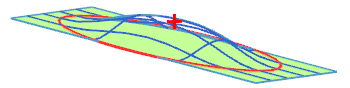

目标点将使用指定点的最大高度加冠选中的面或片体。区域边界必须封闭。您可以选择多个点。

对话框的目标点组允许您指定最大变形的点。
有两种方法可用：在点处偏置以及通过点。
在点处偏置 — 在向面上投影时从所选择的（或计算的）测点处测量指定的距离值作为变形面的最终位置
通过点 — 将创建最大偏置以通过选定点
对于椭圆或矩形，默认为中心点，对于其它的封闭曲线，默认为曲线边界框的中心点。
如果需要，可以使用点方法列表或点构造器来指定点。
区域边界将选择封闭边界曲线作为要修改的区域，在此曲线外，变形为零。